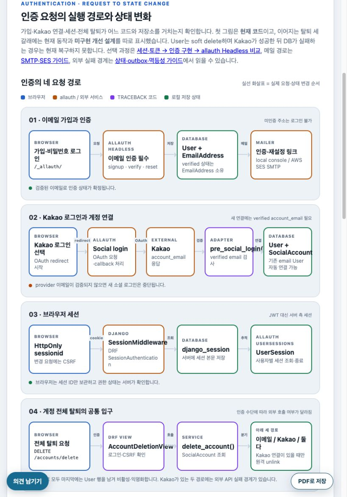
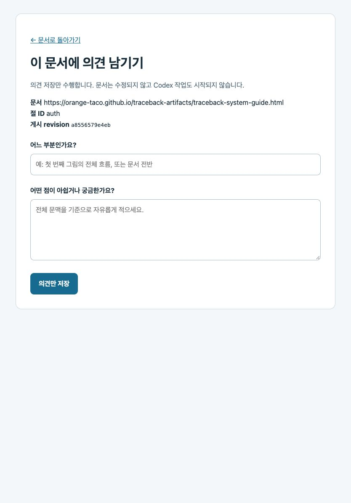

이미 쓰는 URL과 PR 검토를 유지
정적 문서 배포는 Pages가 맡습니다. HTML 변경 PR에서 CodeRabbit 검토를 받을 수 있고, iPad에는 로컬 clone이 필요하지 않습니다.
대안: 전체 웹앱 서버는 한 곳에서 UI와 API를 제공하지만 호스팅·운영 부담이 커집니다. Pages만으로는 서버 측 소유자 검사와 저장 API를 만들 수 없습니다.
TRACEBACK · artifact operations
iPad에서 HTML 전체 맥락을 읽다가 위치와 의견을 적고, 나중에 Codex Cloud에서 그 기록을 열어 수정 여부를 결정하는 설정 지도입니다. 2026년 10월 8일에 확인한 구성과 재설정 순서를 함께 남깁니다.
먼저 전체 경로
화살표는 데이터 또는 작업이 다음 주체로 넘어간다는 뜻입니다. 의견을 누구나 읽을 수 있어도, 저장 권한은 서버가 판단해야 합니다.
정적 HTML은 로그인 없이 열린다. 링크에 문서 URL과 게시 revision을 실어 보낸다.
서버가 GitHub 계정 ID와 세션·CSRF를 검사한다. 방문자에게는 저장 권한이 없다.
같은 공개 저장소의 feedback/에 JSON을 기록한다. 원본 HTML은 바뀌지 않는다.
소유자가 Codex Cloud 작업을 따로 시작해 의견 파일을 읽고 수정 방향을 정한다.
문서 변경 PR을 검토하고 병합하면 공개 Pages가 새 HTML을 배포한다.
TRACEBACK 대응: GitHub Pages → Cloudflare Worker → orange-taco/traceback-artifacts/feedback/ → 세 저장소를 연결한 개인 Codex Cloud 환경 → 문서 PR과 Pages. 의견 저장은 Codex 실행 요청이 아닙니다.
Pages의 HTML은 읽을 수 있습니다. Worker는 로그인하지 않은 저장 요청에 HTTP 401을 반환합니다.
GitHub ID 88140361로 로그인한 세션만 저장할 수 있습니다. 다른 ID는 로그인 콜백에서 HTTP 403을 받습니다.
도구를 고른 이유
공개 문서, 계정 인증, 공개 의견 저장, Codex 작업은 서로 다른 단계입니다. 아래 선택을 바꾸면 어느 경계가 달라지는지 먼저 봅니다.
정적 문서 배포는 Pages가 맡습니다. HTML 변경 PR에서 CodeRabbit 검토를 받을 수 있고, iPad에는 로컬 clone이 필요하지 않습니다.
대안: 전체 웹앱 서버는 한 곳에서 UI와 API를 제공하지만 호스팅·운영 부담이 커집니다. Pages만으로는 서버 측 소유자 검사와 저장 API를 만들 수 없습니다.
의견마다 feedback/ID.json 파일 하나를 커밋합니다. 기존 Codex Cloud 환경에 문서 저장소가 연결되어 있어 DB 조회용 MCP나 네 번째 저장소 없이 파일을 읽을 수 있습니다.
대안: 별도 비공개 저장소는 의견의 비공개성이 필요할 때 적합하지만 추가 접근 설정이 필요합니다. Issues는 토론에 편리하지만 파일처럼 읽으려면 별도 조회 과정이 필요합니다.
GitHub OAuth는 사용자 신원 확인, App 설치 토큰은 공개 저장소 쓰기에 사용합니다. 키는 Worker 비밀값에만 둡니다.
대안: 브라우저에 PAT나 OpenAI API 키를 넣으면 공개 JS를 읽는 누구나 키를 가져갈 수 있습니다. 서버 없는 개인 프롬프트 생성은 의견을 저장하지 못합니다.
의견 파일이 생겨도 작업은 시작되지 않습니다. 소유자가 의견 ID를 지정해 Codex에 읽기 또는 수정 요청을 따로 보냅니다.
대안: 자동 실행 파이프라인은 편하지만 별도 실행 API, 권한 경계와 비용을 설계해야 합니다. 이 구성은 지원되지 않는 Codex 자동 실행을 주장하지 않습니다.
추가 요금 경계 · 2026-10-08: 공개 문서와 의견 파일은 GitHub Free의 Pages와 기존 공개 저장소를 사용합니다. Worker는 Cloudflare 무료 요청 한도 안에서 사용합니다. Codex Cloud는 기존 ChatGPT Plus 사용량을 쓰며, 이 구성은 OpenAI API를 호출하지 않습니다. 각 서비스의 한도와 남은 Codex 사용량은 다시 설정할 때 확인하세요.
실제 설정을 다시 따라가기
화면은 2026년 10월 8일 확인한 설정을 바탕으로 다시 그렸습니다. 인증정보와 개인 화면 캡처는 공개 문서에 포함하지 않았습니다. 왼쪽 단계를 누르면 해당 위치가 강조됩니다.
orange-taco/traceback-artifacts가 HTML, 이미지, 작성 스킬의 원본입니다. 새 의견 링크는 배포 설정이 있을 때만 나타나고, 절 ID가 있으면 함께 전달합니다. 문구 선택은 요구하지 않습니다.
verify_site.py로 로컬 링크를 확인하기 위해서입니다.HTML · feedback.js · Worker · 테스트 · Pages workflow
const target = new URL("/new", worker);
target.searchParams.set("doc", location.origin + location.pathname);
target.searchParams.set("rev", revision);
let section = "";
try { section = decodeURIComponent(location.hash.slice(1)); } catch { /* Invalid fragments are treated as the whole document. */ }
if (section && document.getElementById(section)) target.searchParams.set("section", section);
link.href = target.href;Pages 브라우저가 Worker의 새 의견 화면으로 이동할 때 문서·revision·유효한 절 ID를 보냅니다. 절이 없으면 문서 전체를 대상으로 삼습니다.
python3 scripts/verify_site.py를 실행합니다. 검사 코드는 모든 HTML의 로컬 href·src 대상과 HTML fragment ID를 찾습니다. 외부 URL은 검사하지 않습니다.의견을 공개해도 괜찮다는 결정에 따라 orange-taco/traceback-artifacts 안의 feedback/를 저장 위치로 정했습니다. Worker는 의견 하나당 ID.json을 main에 추가합니다. 누구나 파일을 읽을 수 있습니다.
oscar2272/traceback-feedback를 만들었습니다. 공개를 허용하면서 별도 저장소와 Codex의 네 번째 연결이 불필요해졌습니다. 이 저장소는 이전 설정의 기록일 뿐, 새 의견의 대상이 아닙니다.feedback/**를 포함하지 않아 의견만 추가한 커밋은 사이트를 다시 배포하지 않습니다.feedback/README.md를 확인합니다.Cloudflare Worker traceback-feedback가 GitHub 로그인, 양식, 저장 API를 제공합니다. Pages 주소는 계속 공개 읽기 URL입니다. Worker는 별도 workers.dev HTTPS 주소를 사용합니다.
https://traceback-feedback.traceback-feedback-worker.workers.dev
[vars]
GITHUB_OWNER = "orange-taco"
FEEDBACK_REPO = "traceback-artifacts"
ALLOWED_GITHUB_USER_ID = "88140361"
PUBLIC_SITE_ORIGIN = "https://orange-taco.github.io"Worker가 이 공개 설정을 읽어 허용 GitHub ID, 기록 대상 저장소와 허용 문서 출처를 확인합니다. 인증 비밀값은 이 파일에 넣지 않습니다.
feedback-worker/에서 npm ci 후 npx wrangler login으로 본인 Cloudflare 계정에 로그인합니다.npx wrangler deploy를 실행합니다.curl -i https://…/healthz가 200인지 확인합니다. 이 응답만으로 실제 GitHub 저장은 증명되지 않습니다.처음 만든 개인 소유 비공개 App TRACEBACK Feedback Oscar2272는 개인 의견 저장소에만 설치되어 있었습니다. 비공개 GitHub App은 소유 계정에만 설치할 수 있어 2026년 10월 8일 App을 orange-taco 조직으로 이전했습니다. GitHub 화면에서 새 소유자와 기존 App ID·Client ID 유지를 확인했습니다. 이전 완료와 함께 개인 계정 설치는 자동 제거됐습니다. App 설명도 공개 의견 저장과 Codex 작업 미실행을 알리도록 수정했습니다.
/user로 소유자를 확인한 뒤 버립니다. App 설치 토큰은 Worker가 짧게 발급받아 의견 JSON 한 건을 씁니다.…workers.dev/oauth/callbackorange-taco의 traceback-artifacts만 선택해 설치했습니다(설치 ID 169215439). GitHub 권한은 저장소 Contents 전체에 적용되므로 Worker 코드가 기록 경로를 feedback/로 제한합니다.https://traceback-feedback.traceback-feedback-worker.workers.dev/oauth/callback으로 유지하고 웹훅은 끕니다.traceback-artifacts만 골라 설치합니다.client secret, App private key, 세션 서명 비밀값을 Cloudflare Worker secret으로 저장했습니다. 조직 설치 ID 169215439로 secret을 교체하고 Worker를 재배포했습니다. private key 원본 PEM은 로컬 ~/.ssh/에 보관하며 파일 권한은 600입니다.
feedback.js, PR diff, 브라우저 저장소에는 GitHub 토큰이나 OpenAI API 키가 없어야 합니다.feedback-worker/에서 npx wrangler secret put GITHUB_APP_CLIENT_SECRET을 실행하고 프롬프트에 직접 붙여넣습니다.GITHUB_APP_PRIVATE_KEY에 등록합니다.SESSION_SECRET도 secret으로 등록합니다.npx wrangler secret list에는 이름만 보여야 합니다.공개 저장소의 Actions variable FEEDBACK_WORKER_ORIGIN에 Worker HTTPS origin을 등록했습니다. main 배포 때 site-config.json이 게시 SHA와 origin만 담아 생성됩니다.
https://traceback-feedback.traceback-feedback-worker.workers.dev
origin = os.environ.get("FEEDBACK_WORKER_ORIGIN", "").rstrip("/")
if origin:
parsed = urlsplit(origin)
if parsed.scheme != "https" or not parsed.hostname or parsed.path or parsed.query or parsed.fragment:
raise SystemExit("FEEDBACK_WORKER_ORIGIN must be an HTTPS origin")
config = {"revision": os.environ["GITHUB_SHA"], "feedback_origin": origin}
(Path(os.environ["RUNNER_TEMP"]) / "artifact-site/site-config.json").write_text(json.dumps(config), encoding="utf-8")Pages workflow가 배포할 때만 공개 설정을 만듭니다. feedback.js는 이를 읽어 의견 링크를 표시합니다.
main으로 병합합니다.site-config.json을 따로 확인합니다.개인 Codex Cloud 환경 TRACEBACK Study (3 repos)에는 백엔드, 프런트, 문서 저장소가 이미 연결되어 있습니다. 공개 의견은 문서 저장소의 feedback/에 있으므로 네 번째 저장소를 연결하지 않습니다. 환경 사용 대상은 나만입니다.
traceback-artifacts/feedback/<id>.json을 읽고 의견만 정리해 달라고 요청할 수 있습니다.단일 저장소 전환 뒤 2026-10-08에 소유자 세션으로 실제 의견 ID 420fb0e8-4448-4c3e-a70d-d674fef43d1b을 저장했습니다. 공개 JSON의 문서 URL, 절 ID(null), 선택 문구(null), 위치, 의견, 게시 revision, 작성자 ID 88140361을 확인했습니다. 새 양식을 834px 폭으로 확인했습니다.
문서 URL · 게시 revision · 절 ID(없으면 전체 문서)


의견 파일은 공개 저장소의 feedback/에 있습니다. Codex 작업은 아직 시작되지 않았습니다.
/handoff 링크에서 전체 의견 요청문을 다시 만들 수 있습니다. Pages나 Worker가 작업을 자동 제출하지는 않습니다.function batchPrompt(recent = "") {
return `TRACEBACK Study (3 repos) Codex Cloud 환경에서 orange-taco/traceback-artifacts의 feedback/*.json을 모두 읽어 주세요.${recent} 각 의견의 document_url, section_id, location, comment, document_revision을 확인하고 현재 HTML 및 관련 원본 코드와 비교하세요. 중복되거나 이미 반영된 의견은 구분하고, 타당한 의견만 한 번의 아티팩트 변경으로 정리해 주세요. AGENTS.md와 auth-flow-visualizer 스킬을 따르고 python3 scripts/verify_site.py 및 좁은 화면과 데스크톱 화면을 확인하세요. 변경 이유와 반영하지 않은 의견을 설명하고 문서 PR을 만들어 주세요. 자동 병합은 하지 마세요.`;
}Worker는 요청문을 만들어 복사를 돕습니다. Codex Cloud에 보내는 행위는 사용자에게 남겨 저장 API와 수정 작업을 분리합니다.
async function submit(request, env, url) {
const owner = await session(request, env);
if (!owner) return new Response("Unauthorized", { status: 401 });
if (request.headers.get("Origin") !== url.origin) return new Response("Forbidden origin", { status: 403 });
let fields;
try { fields = await limitedFormData(request); } catch { return new Response("Invalid form", { status: 400 }); }
if (!fields) return new Response("Request too large", { status: 413 });
const csrf = await verify(fields.get("csrf"), env.SESSION_SECRET);
if (!csrf || csrf.nonce !== owner.nonce) return new Response("Invalid CSRF token", { status: 403 });Worker가 요청을 받고 서버에서 소유자 세션, Origin, 크기, CSRF를 순서대로 검사합니다. 브라우저 코드는 이 검사를 대신할 수 없습니다.
/workspace/traceback-artifacts/feedback/<id>.json을 읽고 내용만 정리하도록 요청합니다.2026-10-08 확인 상태
조직 App 설치 뒤 Worker를 배포했고, 소유자 로그인으로 feedback/420fb0e8-4448-4c3e-a70d-d674fef43d1b.json 쓰기를 확인했습니다. 익명 저장은 실서버 401입니다.
다른 GitHub ID 로그인 403과 저장 거부를 자동 테스트했습니다. 실제 다른 계정으로 로그인하는 검사는 수행하지 않았습니다.
첫 배포 SHA a8556579e4eb에서 의견 버튼과 #auth 절 전달을 확인했습니다. 단일 저장소 전환 뒤 새 공개 안내 양식과 저장 완료 화면을 834px 폭에서 확인했습니다.
게시된 세 저장소 환경은 유지합니다. 공개 의견 파일을 만든 뒤 새 Cloud 작업에서 실제 읽기를 확인해야 합니다.
문제가 생기면
FEEDBACK_WORKER_ORIGIN 변수, Pages workflow 성공, 공개 site-config.json의 revision과 origin을 순서대로 확인합니다. HTML은 계속 읽을 수 있습니다.
GitHub App callback이 Worker origin의 /oauth/callback과 정확히 같은지, client secret이 Worker secret에 있는지 확인합니다. 브라우저 URL에 secret을 넣지 않습니다.
App 설치 대상이 orange-taco/traceback-artifacts 한 곳인지, 조직의 설치 ID와 private key가 Worker secret에 있는지 확인합니다. Worker 오류를 보고 GitHub 토큰 발급 실패와 파일 쓰기 실패를 구분합니다.
게시된 환경에 orange-taco/traceback-artifacts가 연결되어 있는지 확인합니다. 의견 파일이 main에 올라간 뒤 새 Cloud 작업을 시작해 읽습니다.
처음 게시한 코드 링크는 55287f3374e9752c4ac9b3171feb7e6c95cba137, 단일 저장소 설정 링크는 c1802be4fd12fb5840e5f776aa1ae4c759aa24aa에 고정했습니다. 콘솔·Cloud 설정은 2026년 10월 8일 관찰값이므로 나중에 바뀔 수 있습니다.